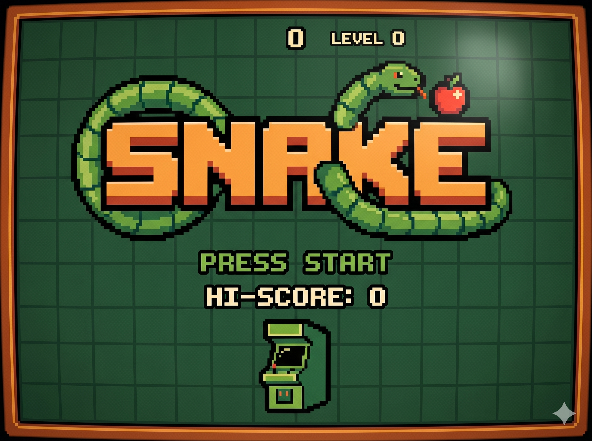
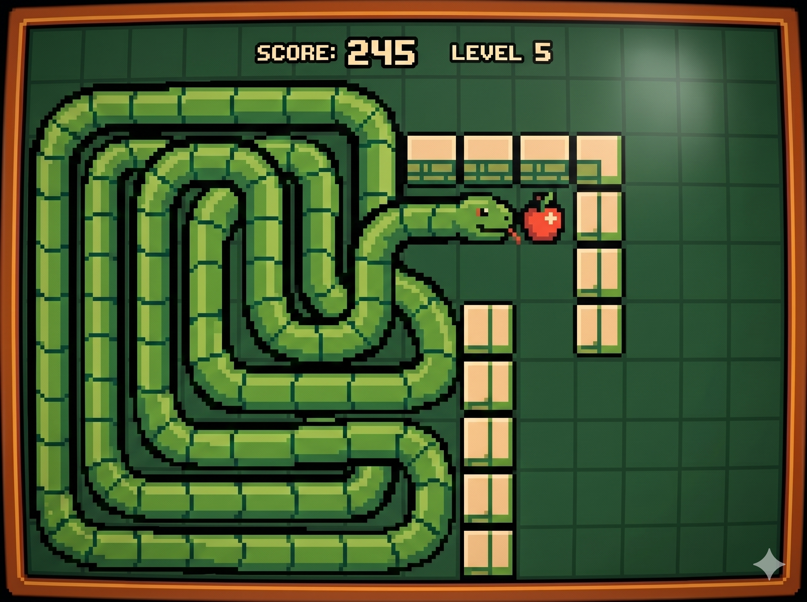

El concepto nació en 1976 con el juego arcade Blockade. Sin embargo, alcanzó la fama mundial en 1998 al ser incluido en los teléfonos Nokia, convirtiéndose en un icono de la cultura pop.
El jugador guía a una criatura que crece cada vez que consume alimento. El desafío principal es el espacio: a medida que la serpiente crece, el área de maniobra disminuye drásticamente.
Nivel: Medio. En este desarrollo, la dificultad aumenta mediante el **incremento de la velocidad del Timer**. Cuanto más larga es la serpiente, menos milisegundos de espera hay entre cada movimiento, exigiendo reflejos mucho más rápidos.
Se gestiona mediante una LinkedList de coordenadas. La colisión se detecta comparando la posición de la "cabeza" con el resto de los nodos del cuerpo.